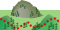

Give a short overview here
| Kondition | |
| Technisches Koennen | |
| Typ | |
| Dauer | 01:00hrs |
| Laenge | 10km |
| Hoehenmeter | 900m |
Explain how to get to the starting point via car.
Explain how to get to the starting point via train.
Explain how to get to the starting point via plane.

Entfernung:0 Hoehe:310
Breitengrad:000 Laengengrad:000
Describe where to go from here.
Streckenbelag:
Entfernung:000 (Interessanter Punkt)
Point of interest text.
Entfernung:500 Hoehe:315
Breitengrad:000 Laengengrad:000
Crosspint 2.
Streckenbelag:
Entfernung:500 (Interessanter Punkt)
Another POI.
Entfernung:500 Hoehe:320
Breitengrad:000 Laengengrad:000
Crosspoint 3.
Streckenbelag: 
Entfernung:500 (Lokal/Restaurant)
A restaurant.
Entfernung:800 Hoehe:330
Breitengrad:000 Laengengrad:000
Crosspoint 4
Streckenbelag:
Entfernung:All the way (Anekdote)
Add an anecdote here
Entfernung:500 Hoehe:430
Breitengrad:000 Laengengrad:000

Crosspoint 5
Streckenbelag:
Entfernung:200 Hoehe:600
Breitengrad:000 Laengengrad:000

Crosspoint 6.
Streckenbelag:
Entfernung:200 Hoehe:310
Breitengrad:000 Laengengrad:000

Crosspoint 7. Southwest to go, see windrose!.
Streckenbelag:
Entfernung:300 Hoehe:600
Breitengrad:000 Laengengrad:000
Crosspoint 8.
Streckenbelag:
Entfernung:200 Hoehe:310
Breitengrad:000 Laengengrad:000
Back At Home!